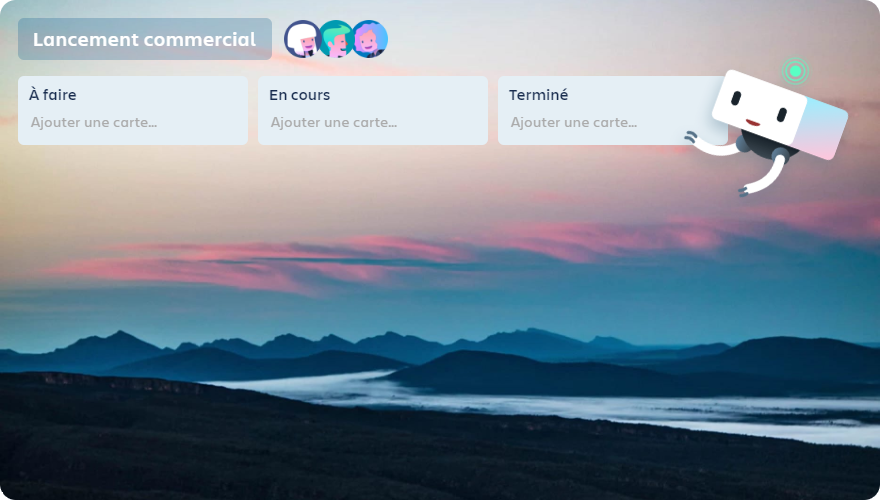
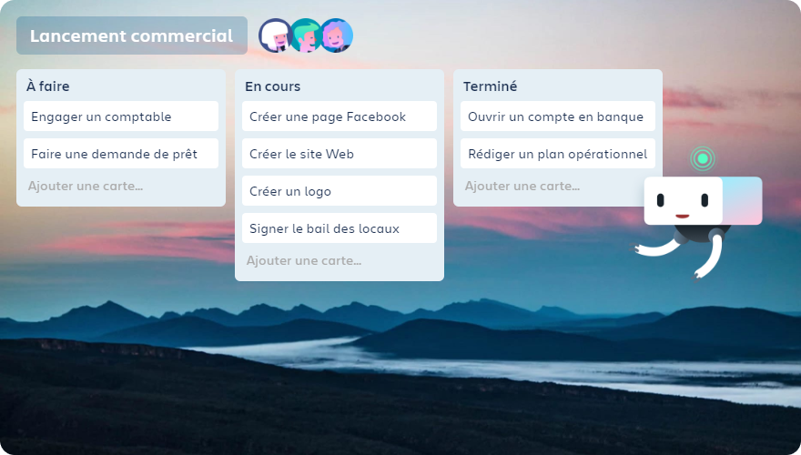
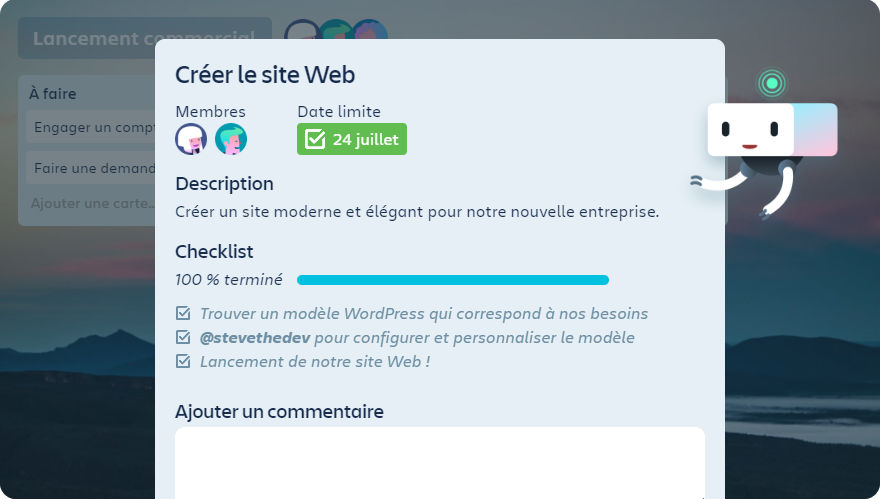
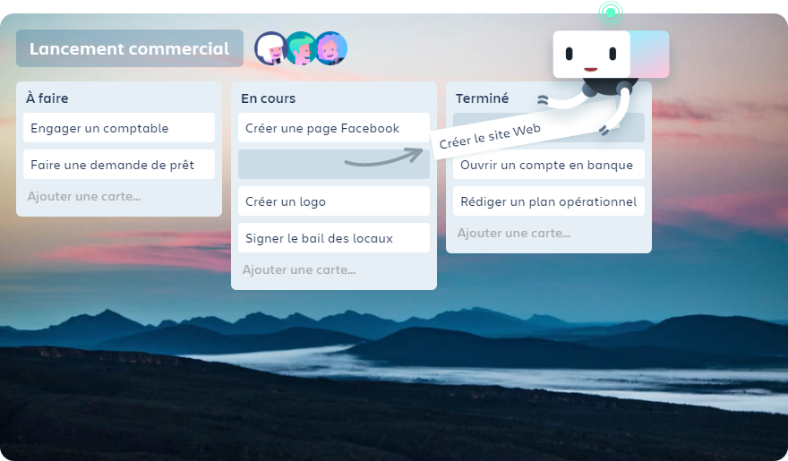

<div class="row">
    <div id="demo" class="carousel slide carousel-fade col-8 offset-2" data-ride="carousel" data-interval="false">
        <ol class="carousel-indicators">
            <li data-target="#demo" data-slide-to="0" class="active"></li>
            <li data-target="#demo" data-slide-to="1"></li>
            <li data-target="#demo" data-slide-to="2"></li>
            <li data-target="#demo" data-slide-to="3"></li>
            <li data-target="#demo" data-slide-to="4"></li>
        </ol>
        <div class="carousel-inner" onclick="$('.carousel').carousel('next')">
            <div class="carousel-item active">
                

                <div class="carousel-caption">
                    <p>Créez un tableau pour n'importe quel projet, donnez-lui un nom et invitez-y votre équipe.</p>
                </div>
            </div>

            <div class="carousel-item">
                

                <div class="carousel-caption d-block w-100">
                    <p>Ajoutez des listes pour créer des étapes dans un flux de travail qui vous correspond.</p>
                </div>
            </div>

            <div class="carousel-item">
                

                <div class="carousel-caption d-block">
                    <p>Créez des cartes pour les tâches à effectuer ou les informations à organiser.</p>
                </div>
            </div>

            <div class="carousel-item">
                

                <div class="carousel-caption d-block">
                    <p>Cliquez sur une carte pour ajouter des détails, des dates limites,<br>des checklists, des commentaires et plus encore.</p>
                </div>
            </div>

            <div class="carousel-item">
                

                <div class="carousel-caption d-block">
                    <p>Déplacez-les entre les listes pour afficher la progression.<br>En un clin d'œil, passez de « À faire » à « Terminé ».</p>
                </div>
            </div>
        </div>
    </div>
</div>